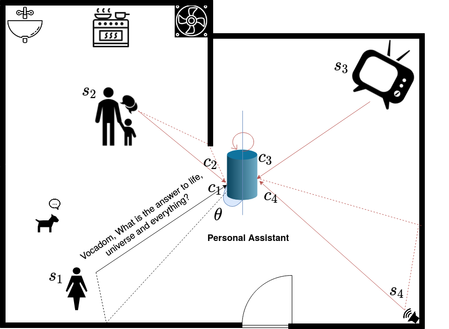
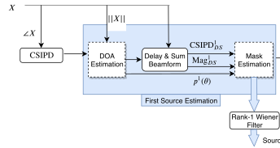

SLOGD: Speaker LOcation Guided Deflation Approach to Speech Separation

Sunit Sivasankaran, Emmanuel Vincent, Dominique Fohr
ICASSP 2020
Problem overview

Sources of noise in a typical home
- Three main adversaries $\rightarrow~~~ $ Noise
- Interfering speech is non-stationary
- Impact performance of speech enabled devices
- Multiple evaluation campaigns $\rightarrow~~~ $ REVERB (Reverberations)
$\rightarrow~~~ $ Reverberations
$\rightarrow~~~ $ Interfering Speech
$\rightarrow~~~ $ CHiME 1-4 (Reverb+Noise)
$\rightarrow~~~ $ CHiME 5,6 (Cocktail party)
Problem overview

Signal mixing model
$$
\mathbf{c}_j(t) = \mathbf{a}_j(t) \star s_j(t),\quad
$$
$\mathbf{a}_j \text{ is the room impulse response (RIR)}$

Approaches to speech separation
- Computational auditory scene analysis frameworks $\rightarrow~~~ $ Imitate human hearing
- Non-negative matrix factorization $\rightarrow~~~ $ Learn non-negative subspaces and find linear combinations that best describe the speaker
- DNN based methods in time-frequency domain $\rightarrow~~~ $ Compute masks for each speaker using DNNs. Ex: Deep Clustering, u-PIT
- Hershey, J. R., Chen, Z., Le Roux, J., and Watanabe, S. (2016). Deep clustering: Discriminative embeddings for segmentation and separation. In ICASSP
- Chen, Z., Luo, Y., and Mesgarani, N. (2017). Deep attractor network for single-microphone speaker separation. In ICASSP
- Kolbaek, M., Yu, D., Tan, Z.-H., and Jensen, J. (2017). Multitalker speech separation with utterance-level permutation invariant training of deep recurrent neural networks. In TASLP
- DNN based methods from raw waveform $\rightarrow~~~ $ Learn encoder, decoder and masker. Ex: Conv-Tasnet
- Luo, Y. and Mesgarani, N. (2019). Conv-TasNet: Surpassing ideal time-frequency magnitude masking for speech separation. TASLP
- Using speaker identity
- Du, J., Tu, Y. H., Sun, L., Ma, F., Wang, H. K., et. al. (2016). The USTC-iFlytek system for CHiME-5 challenge. Proc. CHiME-5
- Implicity use of speaker location : Phase difference between microphone pairs
- Wang, Z. and Wang, D. (2019). Combining spectral and spatial features for deep learning based blind speaker separation, TASLP
- Explicit use of speaker location : TDOA/DOA
- Perotin, L., Serizel, R., Vincent, E., and Guérin, A. (2018). Multichannel speech separation with recurrent neural networks from high-order ambisonics recordings. In ICASSP
- Chen, Z., Xiao, X., Yoshioka, T., Erdogan, H., Li, J., and Gong, Y. (2018). Multi-Channel overlapped speech recognition with location guided speech extraction network. In SLT
- Motivation:
- Estimate a mask from the signal
- Compute speech and noise covariance matrices
- Compute a beamformer using the estimated covariance matrices
- Magnitude spectra of the delay and sum signal
- IPD of the delay and sum signal with respect to a reference microphone
- A two-layer Bi-LSTM network
- Chen, Z., Xiao, X., Yoshioka, T., Erdogan, H., Li, J., and Gong, Y. (2018). Multi-Channel overlapped speech recognition with location guided speech extraction network. In SLT
- Perotin, L., Serizel, R., Vincent, E., and Guérin, A. (2018). Multichannel speech separation with recurrent neural networks from high-order ambisonics recordings. In ICASSP
- IPD at time-frequency bins dominated by source is zero after DSB
- Gives speech like patterns which are useful for DNN to estimate mask
- Reduces the dimension from $I \times (I-1) \times F \rightarrow 2 \times F$ phase features
- No dependency on the array geometry
- Works well if true DOA information is known
- Wrong DOA estimates degrades the performance drastically
- Sivasankaran. S, Vincent. E, Fohr, D., "Analyzing the impact of speaker localization errors on speech separation for automatic speech recognition", arXiv:1910.11114
- Joint training of localization and speech separation network
- Iteratively estimate sources using deflation strategy $\rightarrow~~~ $ Remove dominant speaker first and then estimate dormant speaker
- Kinoshita, K., Drude, L., Delcroix, M., and Nakatani, T. (2018). Listening to each speaker one by one with recurrent selective hearing networks. In ICASSP
- Localization $\Rightarrow$ Delay-and-sum beamform $\Rightarrow$ Mask estimation
- Trained network to estimate either speaker location or output as noise (VAD)
- Used ASR alignments from clean data as voice activity information while training
- utterance - permutation invariant training criteria used for training DOA network
- Remove the dominant speaker from the mixture
- Estimate the DOA and mask of the non-dominant speaker
- Use data dependent beamformers to extract sources from mask
- Yi.L and Mesgarani.N. "Conv-tasnet: Surpassing ideal time–frequency magnitude masking for speech separation." IEEE/ACM transactions on audio, speech, and language processing, 2019
- Speaker location can be used for speech separation
- A deflation based strategy was proposed to improve robustness of speech separation network
Informed speech separation with DNN
$\rightarrow~~~ $ Make speech separation network robust to localization errors
Speech separation using multichannel signals with DNN
Source separation given localization information, $\theta$

Step 1: Delay and Sum (DS) beamforming using the estimated target location
Step 2: Estimate a mask corresponding to the target using
Step 3: Apply data dependent beamformers to extract target speech
Effect of delay and sum beamforming on phase difference


Observations
Proposed solution
Speaker LOcalization Guided Deflation (SLOGD) approach
Estimation of the dominant speaker

$$ L_j = \frac{1}{N}\sum_k \sum_n \mathbb{I}_{kj}(n) \log(p(\theta_k(n)))$$
$\mathbb{I}_{kj}$ is the Indicator variable of the $j^{th}$ source for the $k^{th}$ angle
$$ L = \min_j L_j$$
Speaker LOcalization Guided Deflation (SLOGD) approach
Estimation of the second speaker
Results
Speech Separation (in % WER )
Baseline (with reverberations)
| Single Speaker |
Single Speaker + noise |
2 speakers + noise |
| 12.5 | 25.5 | 66.5 |
After separation
| True DOA (Proposed) |
Est DOA (with GCC-PHAT) |
Deflation (Proposed) |
Conv-Tasnet |
| 35.0 | 54.5 | 44.2 | 53.2 |
Conclusion: Speech separation